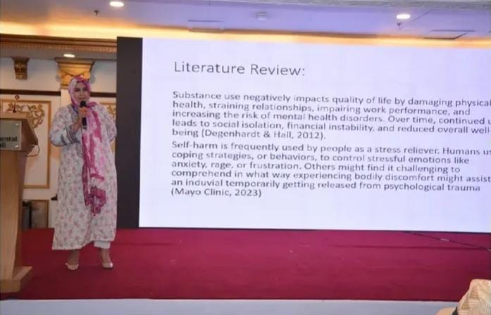
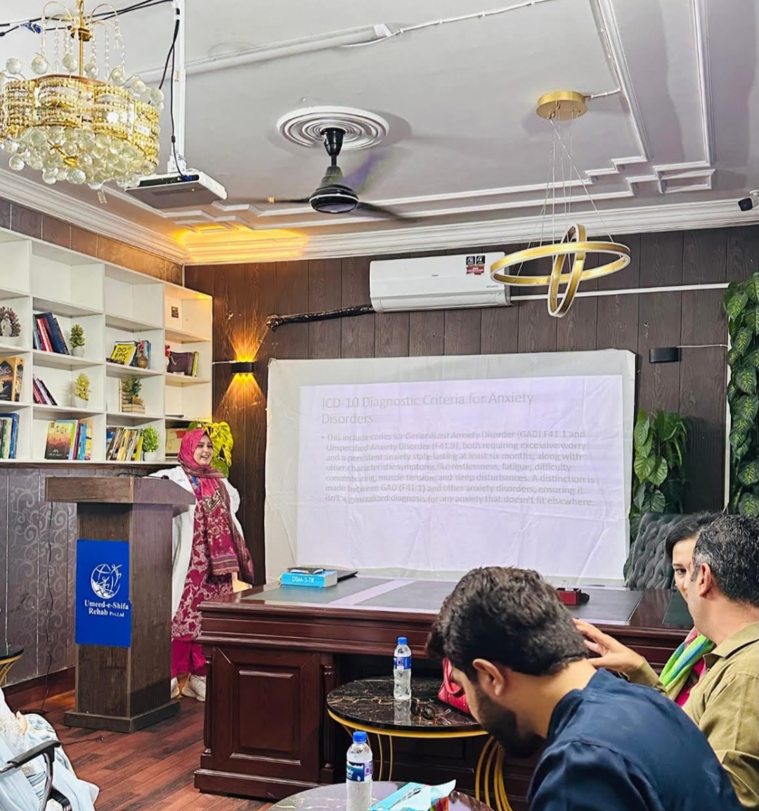

Individual Therapy
One-to-one sessions in a confidential setting, tailored to your specific concerns and pace.
Clinical Psychology Practice · Islamabad
I'm Sadia Sikander, a Clinical Psychologist working with individuals and families through therapy, structured recovery support, and psychological assessment — grounded in three years of clinical practice in rehabilitation settings.
About
Sadia Sikander is a Clinical Psychologist with over three years of hands-on experience supporting individuals and families through substance use recovery and related psychological difficulties. Her work spans psychological assessment, individualized treatment planning, and both individual and group therapy — with a particular focus on relapse prevention, emotional regulation, and rebuilding stable routines after crisis.
She currently practices at Umeed-e-Shifa Rehabilitation Centre in Banigala, where she also supervises psychology interns and collaborates closely with psychiatrists and multidisciplinary teams to keep care coordinated.
Areas of expertise
Services
The list below reflects Sadia's core areas of practice

One-to-one sessions in a confidential setting, tailored to your specific concerns and pace.
Structured, evidence-based support for recovery, relapse prevention, and rebuilding routine.
Facilitated group sessions building coping skills, insight, and peer support in recovery.
Guidance for families on communication, enabling behaviors, and supporting a loved one's recovery.
Comprehensive clinical interviews and standardized assessment tools to guide treatment planning.
Support during moments of emotional dysregulation or behavioral crisis, with practical grounding tools.
My Approach
Every course of treatment moves through the same grounded structure — adapted to what you actually need.
Clinical interview and standardized tools to understand your history and current needs.
A treatment plan built around your goals, risks, and what recovery should look like for you.
Individual or group sessions using CBT-informed methods, motivational interviewing, and psychoeducation.
Where appropriate, working with family to strengthen the support system around you.
Ongoing check-ins and relapse-prevention planning as progress continues.
You're met where you are, without judgment about how you got here.
What's shared in session stays in session, within the bounds of professional ethics.
No fixed program — treatment adapts as your circumstances and progress change.
Methods grounded in clinical training, not guesswork or trends.
Experience & Credentials
Umeed-e-Shifa Rehabilitation Centre, Banigala — assessment, individual & group therapy, family psychoeducation, intern supervision.
Cantonment Hospital, Rawalpindi — psychological assessments, short-term therapy, case documentation.
Islamabad Psychological Center — assessment administration and individual therapy support.
Shaheed Zulfiqar Ali Bhutto University, Islamabad
Riphah International University, Islamabad
UK Health Security Agency
Cardiff University
Islamabad Psychological Center
Why Work With Me
Support built on direct clinical experience in rehabilitation settings — not just general counselling.
Specialized, day-to-day experience with substance use and co-occurring psychological difficulties.
Sessions held to professional standards of privacy and ethical practice.
Plans adapted to your history and goals, not a one-size-fits-all program.
Recognizing that recovery is often supported — or strained — by the people around you.
FAQs
Tap any "Book an Appointment" button to message directly on WhatsApp, or reach out by phone or email. You'll be contacted to confirm your session details.
The first session is generally an intake assessment — a conversation about your history and current concerns, used to shape a treatment plan together.
Yes. Sessions are confidential within the limits of professional and legal ethical guidelines, which will be explained clearly before treatment begins.
Online sessions may be available depending on clinical suitability — mention your preference when booking and it can be discussed.
Individual sessions are typically 45–60 minutes. Group sessions may run longer, depending on the format.
Get in Touch
Message directly on WhatsApp, or reach out by phone or email — whichever is easiest for you.

Tap below to send a message. It opens with a short pre-filled note so you don't have to start from scratch.
Book an Appointment on WhatsAppPrivacy note: please avoid sharing sensitive medical or mental-health details in the chat. It's used only to arrange a time — clinical information is discussed in session.
This site is for informational purposes only and is not a substitute for emergency care — in a crisis, please contact local emergency services immediately.